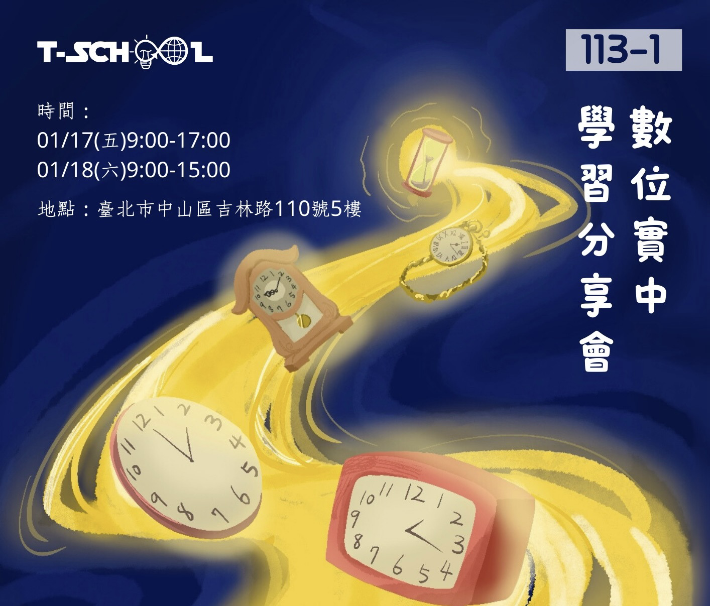

資訊安全密室逃脫
企劃起源
第二屆的第一次科技進階課以資安相關內容為主。在我們數位實驗高中，每年冬天都有舉辦學習分享會的傳統，每堂課都會準備展覽內容。課程討論時，我想到可以結合資安與創客元素設計一個密室逃脫。經過與老師討論，我們決定這學期的學習分享會將以密室逃脫作為展覽主題。

第二屆的第一次科技進階課以資安相關內容為主。在我們數位實驗高中，每年冬天都有舉辦學習分享會的傳統，每堂課都會準備展覽內容。課程討論時，我想到可以結合資安與創客元素設計一個密室逃脫。經過與老師討論，我們決定這學期的學習分享會將以密室逃脫作為展覽主題。